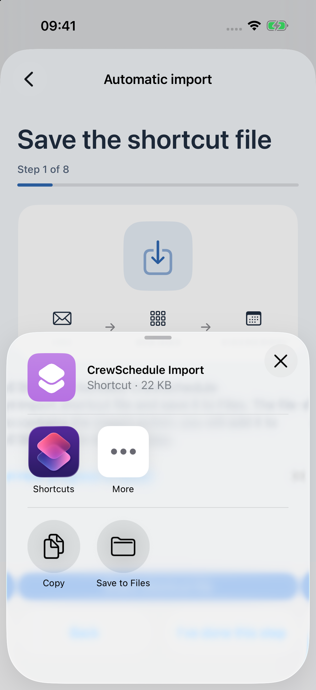
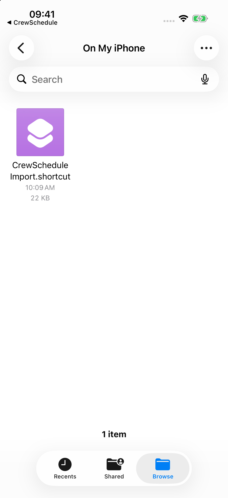
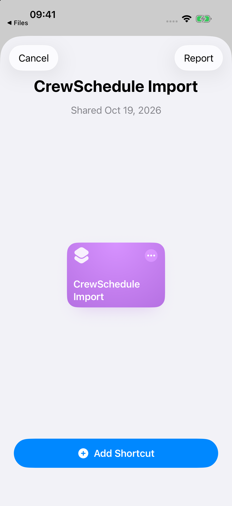
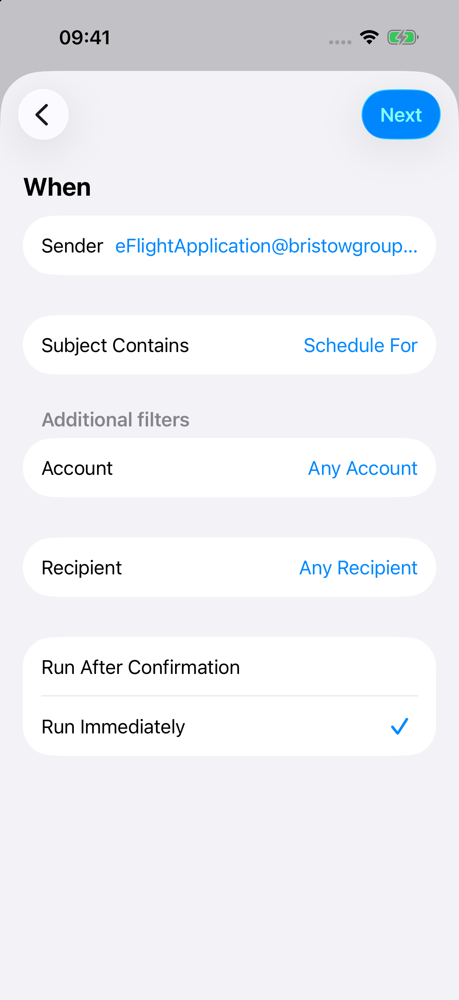
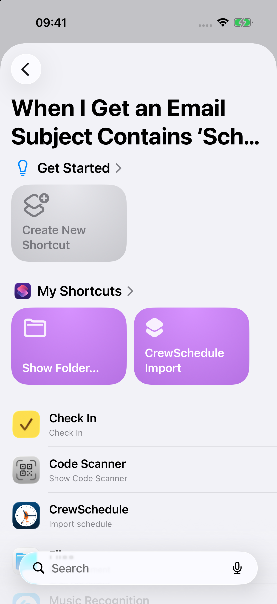
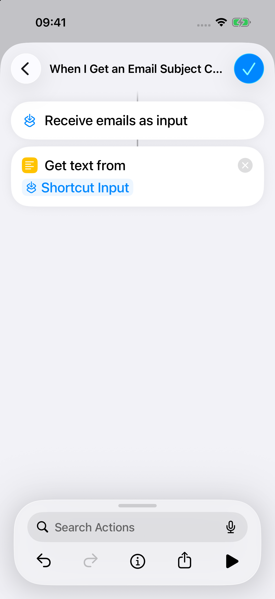
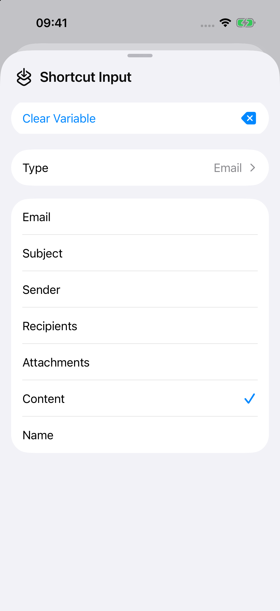
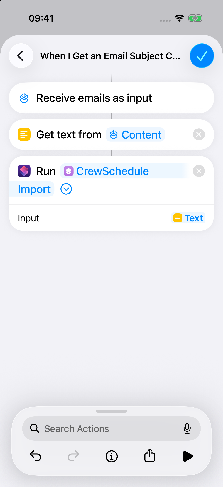
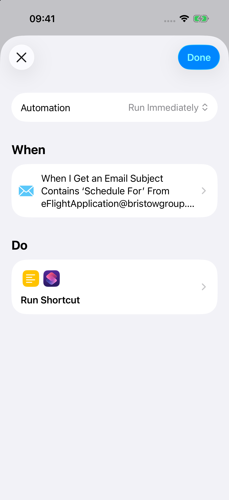

Trinn 1 / 10
Lagre importsnarveien
Åpne Innstillinger → Automatisk import i CrewSchedule. Velg Del snarveifil, og lagre den deretter i Filer.
Filen heter CrewSchedule Import.shortcut.

Trinn 2 / 10
Finn filen
Åpne Filer og finn CrewSchedule Import.shortcut i mappen du valgte.
Gå tilbake til denne veiledningen i CrewSchedule når du trenger neste trinn.

Trinn 3 / 10
Legg til snarveien
Trykk på filen og legg til CrewSchedule Import i Snarveier.
Når du legger til snarveien, opprettes det ikke en e-postautomatisering.

Trinn 4 / 10
Velg e-postutløseren
Åpne Automatisering i Snarveier, trykk på +, velg E-post, angi Avsender til eFlightApplication@bristowgroup.com og Emne inneholder Schedule For, og velg Kjør umiddelbart.
Alle filtrene må samsvare. Kontroller at dette er kontoen som mottar e-post med vaktplanen din.

Trinn 5 / 10
Opprett automatiseringens handlinger
Etter e-postfilteret velger du Opprett ny snarvei. Da opprettes handlingene som kjøres når en e-post som samsvarer, kommer inn.

Trinn 6 / 10
Hent e-postteksten
Legg til Hent tekst fra inndata og velg Snarveisinndata.
Denne handlingen mottar innholdet fra e-posten som samsvarer.

Trinn 7 / 10
Bruk e-postinnholdet
Trykk på Snarveisinndata i Hent tekst fra inndata, utvid variabelpanelet og velg Innhold.
Dette sender det faktiske e-postinnholdet til teksthandlingen.

Trinn 8 / 10
Send teksten til CrewSchedule
Under Hent tekst fra inndata legger du til Kjør snarvei og velger CrewSchedule Import. Utvid handlingen og sett Inndata til tekstresultatet fra Hent tekst fra inndata.
Kontroller Inndata-feltet: Det er ikke nok å velge snarveien.

Trinn 9 / 10
Lagre på én enhet
Lagre automatiseringen. La den bare være aktiv på enheten som mottar og importerer e-postene med vaktplanen. Hvis snarveien tilbyr Tillat kjøring når låst under personverninnstillingene, kan du slå det på hvis du vil.
Slå av den gamle automatiseringen før du flytter automatisk import til en annen enhet.

Trinn 10 / 10
Kontroller neste vaktplan-e-post
Gi tilgang hvis Snarveier spør. Gå tilbake til CrewSchedule og bekreft at du har konfigurert automatiseringen. Kontroller importhistorikken når neste ekte vaktplan-e-post kommer.
Du kan fullføre oppsettet nå; du trenger ikke sende en test-e-post. At du kjører snarveien manuelt, beviser ikke at e-postutløseren fungerer.
Hvis det ikke fungerer
Kontroller at e-posten kom til riktig konto, at begge filtrene samsvarer, og at automatiseringen kjøres umiddelbart. Kontroller deretter at tekstresultatet er koblet til Kjør snarvei. Åpne importhistorikken i CrewSchedule for feil eller vaktplaner som må gjennomgås.